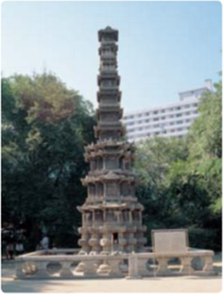
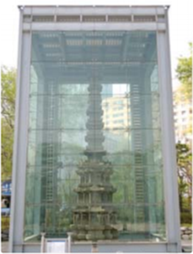

1번
다음 글을 읽고 빈칸 안에 공통으로 들어갈 단어를 쓰시오.

▲ 유리 보호각을 씌우기 전

▲ 유리 보호각 장치를 설치한 후
원각사지 십층 석탑은 서울특별시 종로구 원각사 터에 있는 조선 전기에 만든 탑이다.
대리암으로 만들어져 보통의 화강암에 비해 약하고 부드러우며
비를 맞으면 빠르게 손상된다.
정부와 서울특별시는 형태가 특수하고 의장이 풍부한 석탑이
비나 새의 배설물과 같은
물질에 손상되지 않도록 2004년에 철제 골조를 세우고 유리로 외관을 마감한 형태의 보호장치를 설치하였다.